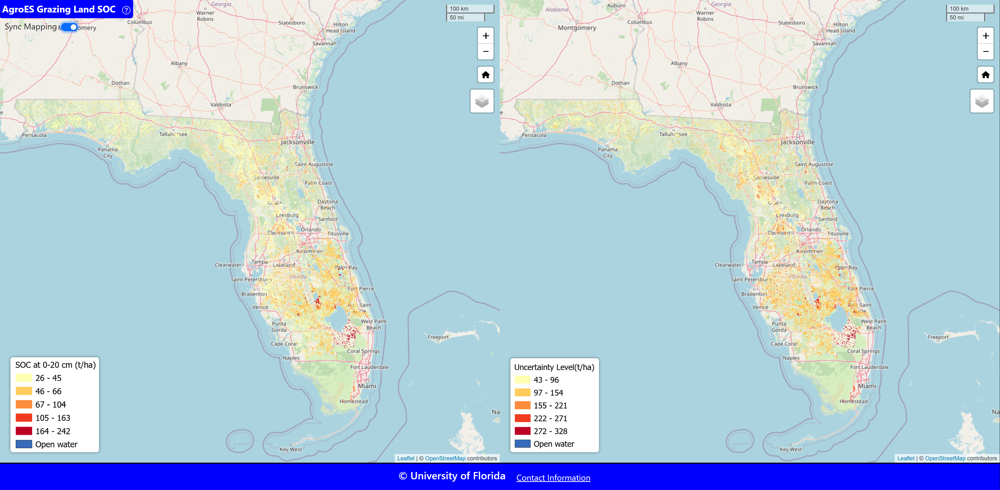

Artificial Intelligence for Product Repairability and Collaborative Robot Disassembly
This research leverages artificial intelligence to enhance sustainability through two key areas: automated repairability assessment and collaborative robot disassembly planning. For repairability evaluation, we developed supervised and unsupervised learning frameworks based on teardown images of consumer electronics. The supervised approach uses object detection and transfer learning with architectures like ConvNeXt, ResNet50, and VGG16 to generate repairability scores. The unsupervised method applies ORB feature extraction and k-means clustering to identify design similarities across devices.
In parallel, we proposed a disassembly scoring framework to assess robotic feasibility for component disassembly based on five design-related factors: weight, shape, size, accessibility, and positioning. Using vision models like MaxViT, we estimate component dimensions and determine suitable work settings—ranging from full human-robot collaboration to robot-only scenarios. These efforts support safer, more efficient disassembly processes and enable scalable decision-making in remanufacturing.
Intelligent Risk Analysis and Mitigation in Robotics
This research focuses on enhancing operator safety and risk awareness in human-robot collaboration during disassembly operations. To address the challenge of predicting human hand movements in close proximity to robots, we develop deep learning-based frameworks that estimate a range of possible hand motion trajectories rather than point-by-point predictions. Using IMU data from desktop disassembly activities, we evaluate LSTM-Bagging, GRU-Bagging, and Bayesian Neural Network with Monte Carlo Dropout (BNN-MCD) to model motion uncertainty and improve safety margins.
In a complementary approach, we propose a hybrid vision-based prediction system combining ConvLSTM and YOLO. ConvLSTM is trained to generate future-frame images from disassembly videos, while YOLO is applied to detect human hands in those predicted frames. This integrated model anticipates human motion in real time and enables robots to dynamically adjust their behavior based on operator position and movement. Together, these efforts support intelligent risk mitigation strategies in collaborative robotic systems used in remanufacturing environments.
Human-Robot Collaboration in Sustainable Manufacturing
This research focuses on optimizing disassembly operations through human-robot collaboration to advance sustainable manufacturing practices. We propose a decision-making framework that jointly considers disassembly cost, operational complexity, and worker safety—three essential factors for dismantling end-of-life (EOL) products. A multi-attribute utility model is developed to address uncertainty in disassembly time and task feasibility, incorporating probabilistic modeling using Beta distributions.
The framework intelligently allocates disassembly tasks between the human operator and the robot based on each task’s disassembleability, safety index, and cost profile. A case study on desktop computer disassembly demonstrates the approach, revealing that the model effectively identifies optimal sequences and task assignments that minimize cost, enhance robotic feasibility, and ensure a safer work environment. This contributes to the development of adaptive, efficient, and safe hybrid disassembly systems for remanufacturing.
Artifical Intellegience for Ecosystem Services

This research investigates the application of artificial intelligence, particularly deep learning and vision-language models, to support the analysis of ecosystem services. We develop GeoAI pipelines that integrate image-based data with multimodal inputs to assess cultural ecosystem services such as recreation, aesthetic value, and cultural significance.
Leveraging models like Contrastive Language–Image Pre-training and Large Foundation Models, we build classifiers and retrieval systems that can automatically identify cultural ecosystem services. These tools enable scalable, data-driven assessment of ecosystem functions across diverse geographic contexts. The approach enhances decision support in environmental planning, conservation policy, and land management by quantifying human-nature interactions through AI.